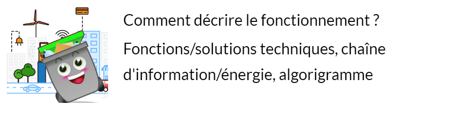

Séance 1: Comment décrire le fonctionnement?

Travail à faire:
Répondre à ces questions :
A quoi sert le système?
Détermine le besoin du système.
Comment fonctionne t-il?
Y a t-il plusieurs versions de système? Quelles sont les différences?
A l'aide de la vidéo:
Déterminer la mission du système ainsi que les cas d'utilisations.
Dans un tableau , indiquer les fonctions techniques que doit réaliser la poubelle connectée; associer les solutions proposées par l'entreprise à cahque fonction dans le tableau.
Décrire le fonctionnement général sous forme de chaîne d'information et d'énergie
Proposer une description du fonctionnement du système sous forme d'un algorigramme.
J'ai réussi mon travail si...
J’ai identifié la mission du système
J'ai trouvé 5 fonctions techniques de la poubelle connectée ;
J'ai associé pour chacune des fonctions trouvées la solution proposée par le concepteur.
J'ai associé les solutions techniques dans les bons blocs fonctionnels ;
J'ai identifié la transformation de l'information ;
J’ai respecté les règles de présentation d’un algorigramme ;
Mon algorigramme répond au problème donné.
Ressources
Fiche Algorigramme:
Fonctions et solutions
Chaine d'énergie Chaine d'information
Fiches de connaissances
🧠 Teste tes connaissances
Réponds aux questions puis clique sur « Vérifier » — la correction s'affiche aussitôt.
1. Combien de fonctions techniques de la poubelle connectée l'élève doit-il trouver ?
2. Sous quelle forme faut-il décrire le fonctionnement général du système ?
3. Sous quelle forme faut-il proposer une description du fonctionnement du système par étapes logiques ?
4. Pour chaque fonction technique trouvée, que doit-on associer ?